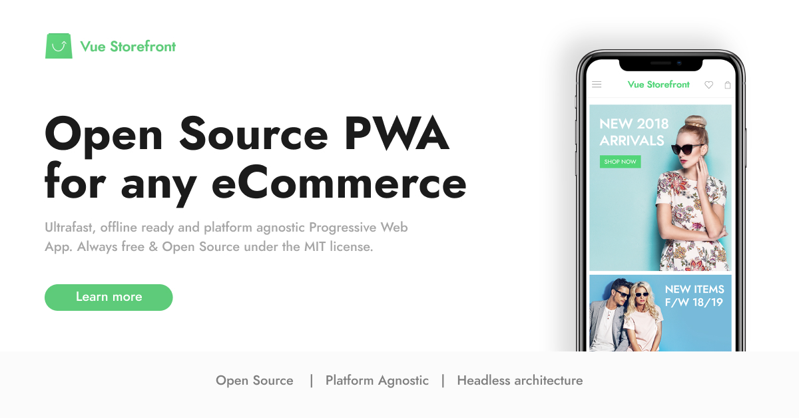
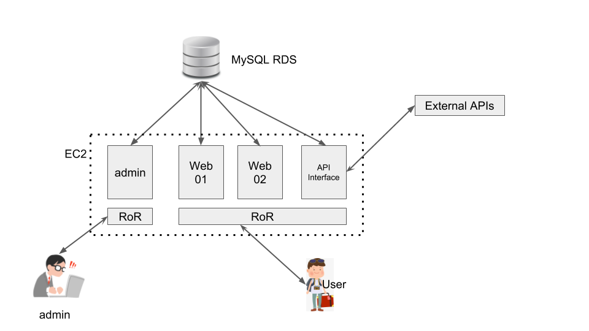

RoRからVueJS + Nuxt PWAに
置き換えてみた
Takeshi Amano - devMeTokyo
PWA night vol.3
2019-04-17 @ オイシックス
天野の紹介
広島出身
カナダの大学卒業
Gengoの初期メンバー
PayPalのエンジニア
現在devMeTokyo代表
devMeTokyo
ウクライナとベラルーシの開発チーム
業務システム開発
セキュリティー周り
PWAの開発がんばってます
Postgresの上でGraphQLが扱える
バックエンドエンジニアいらず
アプリ開発の工数が半分
先週インドでGraphQL Asiaに行ってました
Vue Storefront

突然ですが
今日起きてからスマホで
何やりました？
インスタ
Googleもろもろ...
Amazon
これらのサービスに共通してること
世界最速サービス
PWA対応済み
instagram.com
mobile.twitter.com
www.google.com/maps?force=pwa
ユーザーの期待値
常にオリンピックを見ている
それ以外は県大会レベル以下
Web開発者のミッション
少しでもオリンピックに近づけないといけない
PWA化で実現すること
サイトパフォーマンスが上がる
UXがよくなる
KPIもろもろ改善
コンバージョン率 + 売上アップ
The Best Western River North Hotel
売り上げ -> 300%アップ
宿泊日数 -> 500%アップ
OpenSooq
PWAのサイズは28.3k
滞在時間の平均 -> 25%アップ
リード獲得数 -> 260%アップ
ページダウンロード時間 -> 56%改善
5分以上滞在したユーザー -> 40%アップ
広告収入 -> 44%アップ
広告のクリック数 -> 50%アップ
ITのプロジェクト
何か新しいことをやらないといけない？
いまあるサイトを改良するとKPIや売上があがる
既存のビジネスモデルを変える必要がない
ROIが確実にとれる
PWA置き換え
PHPやRuby stack
↓
モダンなJAM stackで置き換え
JAM Stack
J: Javascript -> VueJS, React...
A: APIs -> GraphQL, REST...
M: Markup (静的サイトジェネレータ)
-> Nuxt, Gatsby...
現状のstack

置き換え後のstack

置き換えの各レイヤー
UX改善: レスポンシブ -> スマホファースト
フロントエンド: RoR -> VueJS + Nuxt
データ取得: RoR -> Lambda
インフラ: EC2 -> S3 + Cloudfront
DevOps: マニュアルデプロイ -> Gitlab CD/CI
ユーザー認証: 独自DB -> Auth0
DB: MySQL RDS -> MySQL RDS
UX改善
レスポンシブ -> スマホファースト
70% - 80%はスマホからのアクセス
スマホ版が先
スマホに特化したUIで作る
パソコン版は別に作る Desktop PWA
フロントエンド
RoR -> VueJS + Nuxt
VueJSでコードをJSに置き換え
NuxtのSSRで静的htmlを作って
SPAよりパフォーマンスアップ
CSSのライブラリはBuefyを使用
AndroidとiPhone別の対応はそれなりに必要
置き換え前のLighthouseスコア
置き換え後のLighthouseスコア
スピード改善
First Contentful Paint: 1.4s ->0.3s (4.6倍up)
First Meaningful Paint: 1.6s ->0.9s (1.8倍up)
Speed Index: 11.9s -> 1.0s (12倍up)
Time to interactive: 19.4s -> 0.8s (24倍up)
データ取得: RoR -> Lambda
Lambdaでmodelもろもろを置き換える
serverlessなのでアクセス増に対応
EC2の構成では600人くらいで落ちていた
lamndaで動的に重い画像を
小さくできるURLを用意
インフラ: EC2 -> S3 + Cloudfront
NuxtのSSRでhtmlファイルを作成
Cloudfrontで各regionのS3のCDNにファイルを置く
EC2を辞めたのでサーバー管理費が安くなった
ユーザー認証: 独自実装 -> Auth0
Auth0にしてログイン周りの実装がシンプルに
Custom databaseを使って
既存のユーザーの移行可能
日本語の対応はそれなりに必要
MySQL RDS
唯一いじらなかった所
VPC peeringを使って新旧のAWS内にあるVPCを同期
管理画面はEC2上のRoRでいまでも動いている
各KPIの改善など
リリース後にまたお伝えします
One more thing...
2007年1月 Macworld
完璧に動作するSafariエンジンが
iPhoneの中にあります。
iPhone上のアプリとまったく同じように動作する素晴らしいWeb 2.0とAjaxアプリケーションを作ることができます。
これらのアプリはiPhoneサービスと完全に統合できます。そしてなんとSDKは必要ありません。
最新のWeb標準の技術を知っているだけでiPhone用のすばらしいアプリケーションを作ることができます。今日から。
しかし...
Safari上のWebアプリは流行らなかった
2008年7月にApp Store開始
iPhoneの最初の１年はApp Storeが無かった
結論
やっぱりJobsは10年先を行っていた
みなさんとこれからPWAを
盛り上げていきましょう！
ありがとうございました
amano@devmetokyo.com
@moksahero
dev.to/moksahero